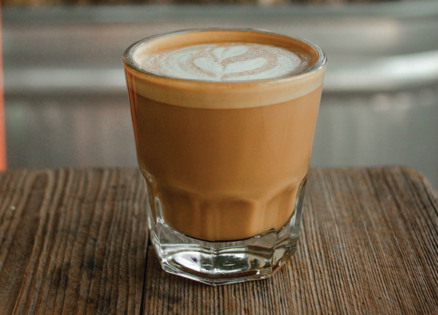

Cafe Coffee
Dine
Home
Menu
Contact
What's
1.Cappuccino

Cappuccino is a latte made with more foam than steamed milk, often with
a sprinkle of
cocoa powder
or
cinnamon on top. Sometimes you can find
variations that use cream instead of milk or ones that
throw in
flavor shot,
as well.
Ingredients:
hot water,milk,instant coffee.
Price:
60/-
3.Espresso
An espresso shot can be served solo or used as the foundation of most
coffee drinks,
like lattes and
macchiatos.
Ingredients:
ground coffee,cold water,lemon twists.
Price:
65/-
5.Cortado

Like yin and yang, a cortado is the perfect balance of espresso and warm
steamed milk. The milk is
used
to cut back on the espresso’s acidity.
Ingredients:
espresso,milk.
Price:
70/-
Hot?
2.Americano

With a similar flavor to black coffee, the americano consists of an espresso
shot diluted
in hot
water.
Pro tip: if you’re making your own, pour the
espresso first, then add the hot water.
Ingredients:
coffee,espresso,hot water.
Price:
70/-
4.Doppio
A double shot of espresso, the doppio is perfect for putting extra pep in
your step.
Ingredients:
ground coffee,hot water.
Price:
75/-
6.Macchiato
The macchiato is another espresso-based drink that has a small amount of foam on top. It’s the happy medium between a cappuccino and a doppio.
Ingredients:
espresso,milk.
Price:
80/-
Want Something Cold?
1. Banana Milk Coffee
Adding creamy smooth banana milk to your morning cold brew makes it
taste rich and
delicious," says foodelicious. "Talk about an eye-opening
good-for-you breakfast in a cup.
Ingredients:
cold brew coffee,simple syrup,ripe banana.
Price:
70/-
2.Iced Caramel Macchiato

A perfect balance of coffee, vanilla, milk, and caramel makes a sweet and creamy summer drink.
Ingredients:
cold brew,caramel sauce,ice cubes.
Price:
80/-
3.Easy Iced Coffee

"Very easy to make, and very good!" You'll shake up instant coffee, sugar,
and water in a
sealable jar. When it's nice and foamy, pour it over ice and
fill with milk.
Ingredients:
instant coffee,ice,milk,sugar.
Price:
70/-
4.Cold-Brewed Coffee

You can use this concentrate straight over ice or microwave half a mug of coffee and then add a half cup of boiling water for quick hot coffee. Develop your own ratio of coffee to water for your custom brew.
Ingredients:
ground coffee,water.
Price:
75/-
5.Vietnamese Iced Coffee

Strong coffee over ice with sweetened condensed milk is an unbeatable
Southeast Asian treat.Serve
it on hot summer days or as an evening treat.
Ingredients:
french press,coffee powder,condensed milk.
Price:
90/-
6.Mocha Smoothie
Combine coconut milk, coffee, sugar, hot chocolate mix, and vanilla extract with ice and blend until smooth.
Ingredients:
greek yogurt,banana,chocolate.
Price:
85/-